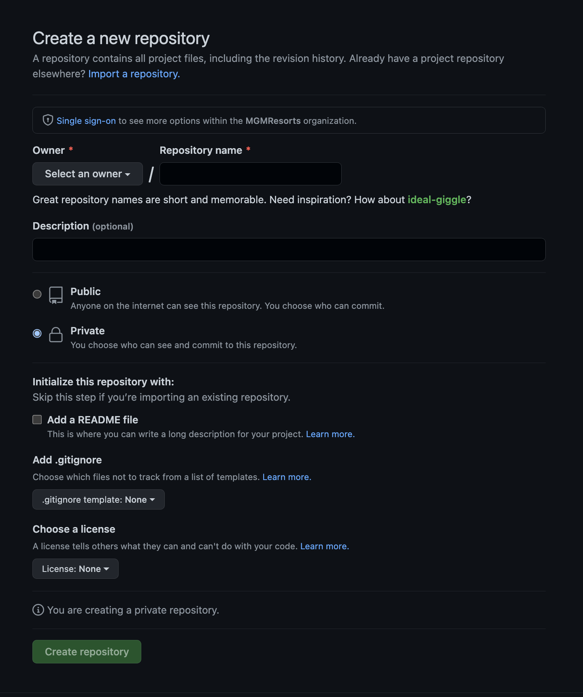

How To Create Your Own Web Page In GitHub
- Sign up for your free GitHub account here
- Click on the 'Repositories'tab and select the 'New' button. This will allow you to maintain your source code and resource files in one place.
- Choose your account in the 'Owner' dropdown and give the repository a name that makes sense to what your project is about (ex.createAPageOnGitHub.io).
 - After clicking 'Create repository', in the 'Quick setup' section, you will see a link 'uploading an existing file'. Click this link to upload your files.
- Once you have uploaded your html file along with any other style sheet and image files, select the 'commit changes' button at the bottom.
- From the home page of your repository, select the 'Settings' tab to configure your environment and page.
- Select 'Environments' and click on the 'New environment' button.
- Enter a name for the environment such as 'github-pages'.
- In the 'Deployment branches', choose 'selected branches' and enter the branch name 'main'.

- Select 'Pages' on the left hand menu options. In the 'Build and deployment section, select 'Deploy from a branch' and choose the 'main' branch. You can leave the default /root option selected. The deployment process should run and complete in a few seconds.